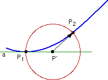

Following the Intrinsic Reaction Coordinate
In order to verify the nature of a transition state that has been optimized with one of the local
methods described before, the Hessian needs to display the required number of negative eigenvalues.
Aside from this local criterion, it is also necessary to identify the
minima connected through the transition state. This latter part is usually performed through
calculation of some kind of reaction coordinate. One particular choice is the
intrinsic reaction coordinate (IRC), defined as the minimum
energy reaction pathway (MERP) in mass-weighted cartesian coordinates between the transition
state of a reaction and its reactants and
products. It can be thought of as the path that the molecule takes moving down the product
and reactant valleys with zero kinetic energy. The Gonzalez-Schlegel method for following the
IRC can be used in Gaussian using the
irc
keyword.
The "recipe" for following the IRC involves walking down the IRC
in a number of steps with fixed step size n, each of them constructed
in the following way:
(1) Starting from point P1 on the path (shown in blue) construct
auxiliary point P' located a distance of n/2 away from P1 along
tangent a (shown in green). The construction of P' does not involve
any energy or gradient calculations.
(2) On a (hyper)sphere of radius n/2 centered at P' search for the
point of lowest energy P2. This latter point is the new point on the
IRC path. This constrained search requires several energy and
gradient calculations and obeys the convergence criteria set with
iop(1/7=x).
(3)This sequence is repeated until the geometry convergence criteria
are fulfilled in direction along the pathway.
|
| 
|
The size of the IRC steps n is given in mass-weighted cartesian coordinates and can be set with
irc=(stepsize=n)
in units of 0.01 amu-0.5Bohr, the default setting being n=10. If the step size is chosen too
large, the constrained optimizations on the hypersphere will be difficult to converge, while a very small
step size leads to a large number of IRC steps. The default step size is appropriate for many cases.
A smaller step size such as n=3 is needed for systems with strongly curved IRC paths. For very flat
potential energy surfaces the step size must be chosen such that the first steps away from the transition
state reach a point at which the gradient has become large enough for the IRC to continue.
The structure of the transition state can either be given directly in the
input file or (more often) be read from the checkpoint file of the previous transition state
optimization using the
geom=check
keyword. In order to follow the IRC down from the transition
state to the products, the second derivative matrix (Hessian) needs also to be known at the
starting point. This information can either be retrieved from the checkpoint file (in case
it has been calculated before) with
irc=(rcfc)
or it can be calculated at the beginning of the IRC path with
irc=(calcfc)
The number of steps per job can be determined with
irc=(maxpoints=N)
with N being a positive integer. The default in this case is N=10, much larger values being impractical
due to large file sizes and long runtimes. For each step on the IRC path, the
algorithm performs a constrained optimization on a hypersphere, the radius of which is set to half the step size.
The convergence criteria for these steps as well as those for
final convergence of the IRC itself can be set in the usual way with
iop(1/7=n)
A meaningful choice for n is 300 (as in normal geometry optimization calculations), smaller values being
useful for flat potential energy surfaces.
A tighter convergence criterion is also needed if small step sizes are used. Please observe that a tight
convergence criterion can be specified either through iop(1/7=10) or through
irc=(tight). The latter option is, however, not properly operating in some
versions of Gaussian. Similarly, if left unspecified, the default geometry convergence criterion
for IRC calculations in some versions of Gaussian is set to iop(1/7=3000).
As this is rarely useful, it is important to always specify a convergence criterion explicitly in IRC
calculations.
The direction of the IRC path can be chosen with either
irc=forward or irc=reverse
the forward direction corresponding to the direction of the transition vector with the largest
component being positive. In practice it is often required to follow the IRC in
both directions anyway and two separate calculations are used, one in the forward and one in the reverse
direction. IRC calculations that have exhausted their maximum number of
steps can be restarted with
irc=(restart,maxpoints=n)
with a larger number of maxpoints as before.
How these options can be put to work and what kind of errors are typically encountered will
be demonstrated for the Huisgen reaction (dipolar cycloaddition reaction) of acetylene with
hydrazoic acid as a worked example.
last changes: 08.11.2004, HZ
questions & comments to: zipse@cup.uni-muenchen.de